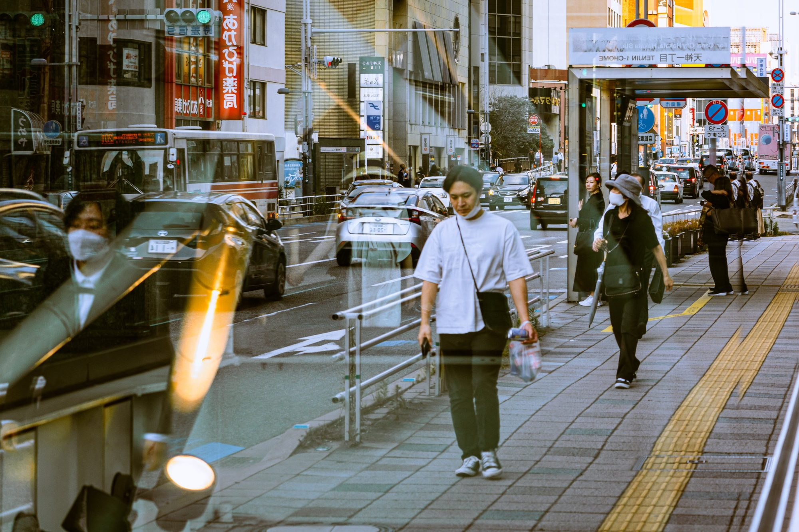

Bill Lin
Embrace The Beauty Between Streets
About Me
I'm Bill, a Taiwanese photographer. My exploration into the world of photography began at the age of 17—a journey that has since blossomed into a fervent love affair with the art of street photography. There's a certain magic in roaming the bustling city streets, camera in hand, ready to capture those fleeting moments that tell a thousand words.
My lens is drawn to the symphony of the ordinary, the laughter and whispers of people whose names I may never know but whose stories are etched in the frames I shoot. I invite you to step into my world, to peer through my lens, and to revel in the myriad of stories that the streets generously offer.
Blog
Shop
Enhance your home/workspace with stunning photographs

